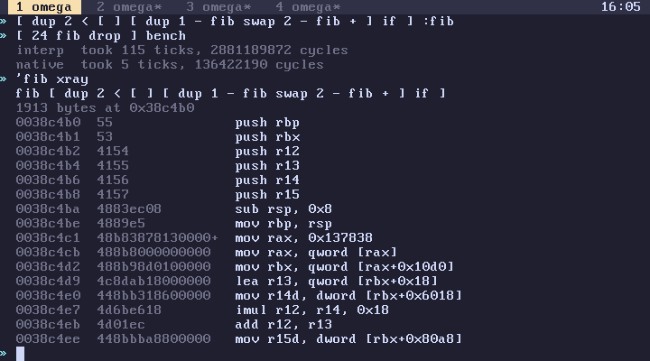
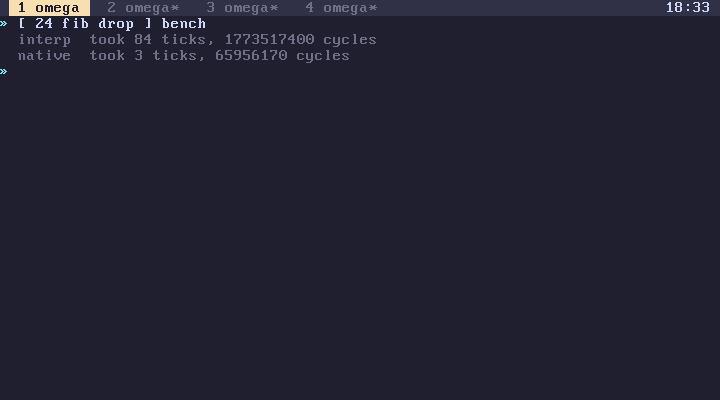

subverge
subvergeJIT
A quote is compiled to x86-64 the second time it runs, and the machine code runs from then on. See dis for reading the output.
Looking at it
jit is it on, and what has it compiled
jit-off jit-on turn it off and on
'fib compile compile now, leaves address and length
'fib addr the address of its code
addr n dis disassemble n instructions at addr
addr len disr disassemble a range of bytes
'fib jitdis compile and disassemble all of it
'fib xray source, then machine code
[ ... ] bench time a quote with the JIT off, then on
xray is the most useful of these. It shows the word's source and then every instruction the JIT made for it, so you can see which words were inlined and which became calls.

bench runs a quote with the JIT off and then on and shows both times. On a recursive fib, it's about 80 ticks interpreted and 4 compiled, twenty times faster.

What it generates
The JIT makes call-threaded x86-64. Each item in a quote becomes either inline code or a call back into the interpreter, and a few registers are reserved while compiled code runs:
| Register | Holds |
|---|---|
rbx |
the omega state of the current tab |
r12 |
the top-of-stack pointer |
r13 |
the stack base |
r14 |
the stack depth |
r15 |
the saved local count |
rbp |
the frame |
These words are inlined, each with a type check that falls back to the real built-in if the values aren't plain integers: + - * & | xor, the comparisons, and dup over drop swap nip not neg. +, -, * and neg also check the CPU's overflow flag, and on overflow they jump to the built-in, which makes a bignum. The result is computed in a register first and only stored once it's known to fit, so nothing on the stack is touched on the slow path. Literals are inlined. if, when, unless, times, for and while become real native jumps and loops when their quotes are written right there in the source, instead of coming off the stack. Everything else is a call back into the interpreter.
So fib goes from about 80 ticks to 4, since it's all comparisons, arithmetic and an if with literal quotes, while a loop that spends its time in say speeds up a lot less, since say is still say.
Compiled loops still check for Ctrl-C and let the garbage collector run.
When it compiles
A quote counts how many times it's been run. On the second run it's compiled, and the code is attached to the quote. Quotes that can't be compiled are marked so it doesn't try again, and compile on one fails with foo can't be compiled.
Invalidation
Compiled code makes assumptions, mostly that + still means +. So every piece of code is stamped with jit_version, and that number goes up whenever a definition shadows a built-in or root is rebuilt. Code with an old stamp isn't run again, and the quote is compiled again the next time it's run twice.
Old code can't be freed straight away, because another tab might be in the middle of running it. So it goes on a dead list of up to 512 entries, and an atomic jit_running counter tracks how many tasks are inside compiled code right now. The dead list is only swept when that counter is zero, which means nobody anywhere is in compiled code, and only then is the memory freed.
A root rebuild retires the code of every unit it replaced. A quote freed by the collector retires its code the same way.
Turning it off
jit-off makes everything run in the interpreter. Results are identical either way, so any difference in behaviour is a JIT bug. Report it with the xray output.
mandel
mandel is the best real program to watch it on, because its inner loop, mb-iter, is almost nothing but arithmetic. Try 'mb-iter xray and [ -32768 0 2816 40 mandel-at ] bench.